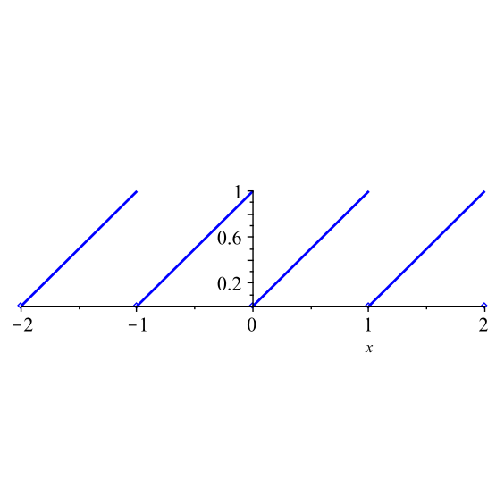

Seperti yang kita lihat dalam aktivitas pendahuluan, jika terdapat surjeksi \(p\) dari ruang topologi \((X,\tau)\) ke suatu himpunan \(Y\text{,}\) kita dapat mendefinisikan topologi pada \(Y\) dengan menetapkan himpunan-himpunan terbukanya sebagai semua himpunan \(U \subseteq Y\) sedemikian sehingga \(p^{-1}(U)\) terbuka di \(X\text{.}\) Dengan cara inilah kita membentuk apa yang disebut topologi kuosien. Sebelum mendefinisikan topologi kuosien, kita perlu mengetahui bahwa konstruksi ini selalu menghasilkan suatu topologi.
Kegiatan16.2.
Misalkan \((X,\tau_X)\) suatu ruang topologi, \(Y\) suatu himpunan, dan \(p: X \to Y\) suatu surjeksi. Misalkan
Mengapa \(\emptyset\) dan \(Y\) merupakan anggota \(\tau_Y\text{?}\)
(b)
Misalkan \(\left\{U_{\beta}\right\}\) suatu koleksi himpunan dalam \(\tau_Y\text{,}\) dengan \(\beta\) berada dalam suatu himpunan indeks \(J\text{.}\)
(i)
Tunjukkan bahwa \(\bigcup_{\beta \in J} U_{\beta}\) merupakan anggota \(\tau_Y\text{.}\)
(ii)
Jika \(J\) berhingga, tunjukkan bahwa \(\bigcap_{\beta \in J} U_{\beta}\) merupakan anggota \(\tau_Y\text{.}\)
(c)
Kesimpulan apa yang dapat kita tarik mengenai \(\tau_Y\text{?}\)
Kegiatan 16.2 memungkinkan kita mendefinisikan topologi kuosien.
Definisi16.1.
Misalkan \((X,\tau_X)\) suatu ruang topologi, \(Y\) suatu himpunan, dan \(p: X \to Y\) suatu surjeksi.
Topologi kuosien pada \(Y\) adalah himpunan
\begin{equation*}
\{U \subseteq Y \mid p^{-1}(U) \in \tau_X\}\text{.}
\end{equation*}
Suatu fungsi \(p: X \to Y\) disebut pemetaan kuosien jika \(p\) surjektif dan, untuk \(U \subseteq Y\text{,}\)\(U\) terbuka di \(Y\) jika dan hanya jika \(p^{-1}(U)\) terbuka di \(X\text{.}\)
Jika \(p: X \to Y\) merupakan pemetaan kuosien, maka ruang \(Y\) disebut ruang kuosien dari \(X\) yang ditentukan oleh \(p\text{.}\)
Kegiatan16.3.
(a)
Misalkan \(X=\R\) dengan topologi standar, \(Y=\{-1,0,1\}\text{,}\) dan definisikan \(p:X \to Y\) dengan
\begin{equation*}
p(x) = \begin{cases}1\amp \text{ jika } x>0 \\ 0 \amp \text{ jika } x=0 \\ -1 \amp \text{ jika } x\lt 0. \end{cases}
\end{equation*}
Tentukan semua himpunan terbuka dalam topologi kuosien tersebut.
(b)
Misalkan \(X=\R\) dengan topologi standar, \(Y=[0,1)\text{,}\) dan definisikan \(p:X \to Y\) dengan
dengan \(\lfloor x\rfloor\) menyatakan bilangan bulat terbesar yang kurang dari atau sama dengan \(x\text{.}\) Sebagai contoh, \(\lfloor 1.2 \rfloor = 1\text{,}\) sehingga \(p(1.2) = 1.2 - 1 = 0.2\text{.}\) Fungsi yang didefinisikan oleh \(\lfloor x\rfloor\) disebut juga fungsi lantai. Perhatikan bahwa \(\lfloor -0.7 \rfloor = -1\text{.}\) Tentukan semua himpunan dalam topologi kuosien tersebut.

Gambar16.2.Grafik \(p(x) = x - \lfloor x\rfloor\text{.}\)
Grafik \(p\) pada \([-2,2]\) ditunjukkan dalam Gambar 16.2.
Sudut pandang lain terhadap topologi kuosien memanfaatkan fakta bahwa setiap relasi ekuivalensi \(\sim\) pada suatu himpunan \(X\) mempartisi \(X\) menjadi gabungan kelas-kelas ekuivalensi yang saling lepas, \([x] = \{y \in X \mid y \sim x\}\text{.}\) Terdapat surjeksi alami \(q\) dari \(X\) ke himpunan kelas-kelas ekuivalensi, yang diberikan oleh \(q(x) = [x]\text{.}\) Kita menyelidiki sudut pandang ini dalam aktivitas berikut.
Kegiatan16.4.
Misalkan \(X = \{a,b,c,d,e,f\}\) dan \(\tau = \{\emptyset, \{a\}, \{b\}, \{a, b\}, \{a, b, c\}, \{a, b, c, d\}, X\}\text{.}\) Maka \((X, \tau)\) merupakan ruang topologi. Misalkan \(A = \{a, b, c\}\) dan \(B = \{d,e,f\}\text{.}\) Definisikan relasi \(\sim\) pada \(X\) dengan \(x \sim y\) jika \(x\) dan \(y\) keduanya berada dalam \(A\) atau keduanya berada dalam \(B\text{.}\) Anggap bahwa \(\sim\) merupakan relasi ekuivalensi. Himpunan \(A\) dan \(B\) adalah kelas-kelas ekuivalensi relasi ini. Dengan kata lain, \(A = [a] = [b] = [c]\) dan \(B = [d] = [e] = [f]\text{.}\) Misalkan \(X^* = \{A,B\}\text{.}\) Kita kemudian dapat mendefinisikan \(p : X \to X^*\) dengan memetakan setiap \(x \in X\) ke himpunan yang memuatnya. Dengan kata lain, \(p(x) = [x]\) untuk \(x \in X\text{,}\) atau
\begin{equation*}
p(a) = A, p(b) = A, p(c) = A, p(d) = B, p(e) = B, \text{ dan } p(f) = B\text{.}
\end{equation*}
Tentukan himpunan-himpunan dalam topologi kuosien pada \(X^*\text{.}\)
Partisi \(X\) dalam Kegiatan 16.4 menjadi gabungan saling lepas dari himpunan \(A\) dan \(B\) mendefinisikan relasi ekuivalensi pada \(X\text{,}\) dengan \(x \sim y\) jika \(x\) dan \(y\) keduanya berada dalam himpunan yang sama, yakni \(A\) atau \(B\text{.}\) Dengan kata lain, \(a \sim b \sim c\) dan \(d \sim e \sim f\text{.}\) Dalam konteks ini, himpunan \(A\) dan \(B\) merupakan kelas ekuivalensi — \(A = [a]\) dan \(B = [d]\text{,}\) dengan \([x]\) menyatakan kelas ekuivalensi dari \(x\text{.}\) Hal ini membawa kita pada konstruksi umum.
Jika \((X, \tau)\) suatu ruang topologi dan \(\sim\) suatu relasi ekuivalensi pada \(X\text{,}\) kita dapat mendefinisikan \(X/\ssim\) sebagai himpunan kelas-kelas ekuivalensi yang berbeda dari \(X\) terhadap \(\sim\text{.}\) Maka \(p: X \to X/\ssim\) yang didefinisikan oleh \(p(x) = [x]\) merupakan surjeksi dan \(X/\ssim\) memiliki topologi kuosien. Ruang \(X/\ssim\) disebut ruang kuosien. Ruang \(X/\ssim\) disebut juga ruang identifikasi karena relasi ekuivalensinya mengidentifikasi titik-titik dalam himpunan tersebut agar dipandang sebagai titik yang sama. Dengan demikian, kita dapat membayangkan ruang kuosien sebagai hasil perekatan atau penciutan bagian-bagian ruang \(X\text{.}\)
Gambar16.3.Sebuah tabung sebagai ruang identifikasi \(X/\ssim\text{.}\)
Contoh16.4.
Misalkan \(I = [0,1]\) dan \(X = I \times I\) dengan topologi standar. Definisikan \(\sim\) sebagai relasi ekuivalensi pada \(X\) yang dibangkitkan oleh identifikasi \((x,y) \sim (x,y)\) jika \(0 \lt y \lt 1\) dan \(0 \leq x \leq 1\text{,}\) serta \((x,0) \sim (x,1)\) jika \(0 \leq x \leq 1\text{.}\) Dengan konstruksi ini, \(\sim\) merupakan relasi ekuivalensi. Mari kita perhatikan bentuk ruang identifikasi \(X/\ssim\text{.}\) Ruang \(I \times I\) adalah persegi satuan seperti yang ditunjukkan dalam Gambar 16.3. Setiap titik di bagian dalam persegi hanya diidentifikasi dengan dirinya sendiri. Namun, sisi atas dan sisi bawah diidentifikasi satu sama lain dengan arah yang sama. Bayangkan \(X\) sebagai selembar kertas. Kita menggulung persegi itu hingga sisi atas dan sisi bawahnya berimpit. Hasilnya, \(X/\ssim\) merupakan tabung seperti yang ditunjukkan dalam Gambar 16.3.
Kegiatan16.5.
Ruang kuosien dapat sulit dideskripsikan. Aktivitas ini menyajikan beberapa contoh tambahan.
(a)
Misalkan \(X = [0, 1]\) dengan topologi standar dan definisikan relasi ekuivalensi \(\sim\) pada \(X\) dengan \(0 \sim 1\) dan \(x \sim x\) untuk setiap \(x\) yang tidak sama dengan \(0\) maupun \(1\text{.}\) Seperti apakah bentuk ruang kuosien \(X/\ssim\text{?}\)
Gambar16.5.Dari kiri ke kanan: identifikasi untuk bagian (i), (ii), dan (iii)
Pandang relasi \(\sim\) sebagai perekatan titik \(0\) dan \(1\text{.}\)
(b)
Deskripsikan ruang-ruang kuosien dari \(X = I \times I\) dengan topologi standar yang diperoleh dari relasi ekuivalensi \(\sim\) yang dibangkitkan oleh identifikasi berikut. Gambaran identifikasinya ditunjukkan dalam Gambar 16.5. (Di sini \(I\) adalah interval tertutup \([0,1]\text{.}\))
(i)
\((x, y) \sim (x,y)\) jika \(0 \lt y \lt 1\) dan \(0 \leq x \leq 1\text{,}\) serta \((x,0) \sim (1-x,1)\) jika \(0 \leq x \leq 1\text{.}\) (Ruang ini disebut pita Möbius.)
(ii)
\((x, y) \sim (x,y)\) jika \(0 \lt x \lt 1\) dan \(0 \lt y \lt 1\text{,}\)\((x,0) \sim (x,1)\) untuk \(0 \lt x \lt 1\text{,}\)\((0,y) \sim (1,y)\) untuk \(0 \lt y \lt 1\text{,}\) serta \((0,0) \sim (0,1) \sim (1,0) \sim(1,1)\text{.}\) (Ruang ini disebut torus.)
(iii)
\((x, y) \sim (x,y)\) jika \(0 \lt x \lt 1\) dan \(0 \lt y \lt 1\text{,}\) serta \((x,y) \sim (u,v)\) jika \((x,y)\) dan \((u,v)\) merupakan titik batas.
Banyak ruang identifikasi menarik lainnya dapat dibentuk. Sebagai contoh, misalkan \(X = I \times I\) dan definisikan \(\sim\) sebagai relasi ekuivalensi yang dibangkitkan oleh \((x, y) \sim (x,y)\) jika \(0 \lt x \lt 1\) dan \(0 \lt y \lt 1\text{,}\)\((0, y) \sim (1, y)\) untuk \(0 \lt y \lt 1\text{,}\) serta \((x,0) \sim (1-x,1)\) untuk \(0 \lt x \lt 1\text{.}\) Identifikasi ini digambarkan dalam Gambar 16.6. Ruang identifikasi \(X/\ssim\) yang dihasilkan adalah botol Klein. Ilustrasi yang baik mengenai konstruksi ini dapat dilihat di maths.org 5 .